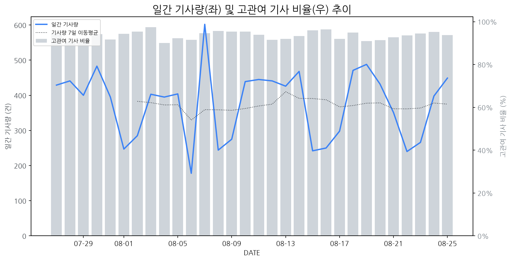

1
시장 활동 지표
기사량 추세 & 이상 징후 탐지
시장의 '전체 기사량'이 평소보다 비정상적으로 급증했는지(Spike)를 차트로 확인하고, LLM이 분석한 급등의 핵심 원인을 파악할 수 있음

고관여 기사란? 산업 연관 키워드로 수집된 기사들 중 디스플레이 키워드에 가중치를 반영하여 도출된 관련성 높은 기사
수집된 기사 수 (2026-08-25)
449
-5% WoW
기사량 변동 수준 (7일 이동평균 대비)
±6.7% 이하
2
오늘의 키워드
급격한 관심 ↑, 주목해야 할 키워드
1
모니터
+4.0σ
삼성전자의 6K 게이밍 모니터 공개 및 게임스컴 참가 소식이 모니터 시장의 관심을 끌었습니다.
Related Metrics
금일 언급량: 17, 전일 대비: +16
Interpretation
고성능 모니터 수요 증가 기대
Next Step
'모니터' 관련 상세 기사 및 경쟁사 반응 모니터링
2
삼성전자
+3.5σ
삼성전자가 게임스컴에서 6K 게이밍 모니터 신제품과 통합 게이밍 생태계를 공개하며 큰 주목을 받았습니다.
Related Metrics
금일 언급량: 32, 전일 대비: +21
Interpretation
고성능 게이밍 디스플레이 시장 강화
Next Step
주요 기업 '삼성전자'의 이벤트가 감지되었습니다. 4번 섹션(주요 기업 EVENTS)에서 상세 내용을 확인하세요.
3
tcl
+2.1σ
TCL의 미니LED TV가 옴디아 화질 평가에서 만점을 받으며 기술력을 입증했습니다.
Related Metrics
금일 언급량: 6, 전일 대비: +6
Interpretation
TCL 기술력 입증, K-OLED 수요 증대
Next Step
'tcl' 관련 상세 기사 및 경쟁사 반응 모니터링
4
레노버
+1.9σ
레노버의 신규 게이밍 모니터 4종 출시로 디스플레이 시장 주목도 급증.
Related Metrics
금일 언급량: 10, 전일 대비: +10
Interpretation
게이밍 모니터 수요 증가
Next Step
핵심 토픽 'IT_OLED_Topic' 관련 신호입니다. 3번 섹션(키워드 감성분석)에서 해당 토픽의 감성 변동을 교차 확인하세요.
3
실시간 Risk 키워드
경계해야 할 시그널 탐지
특정 토픽의 부정 감성 점수가 급등할 때 이를 즉시 탐지하고, "근거 기사" 링크를 통해 리스크의 실체를 빠르게 파악할 수 있음
키워드 분석 결과, 오늘은 걱정할 만한 하락 신호가 없습니다. (부정 언급량 변화: +1.5σ 이내)
4
주요 이벤트 모니터링
실시간 산업 동향 파악을 위한 주요 활동
최근 발생한 주요 기업들의 신제품 출시, 투자 등 주요 이벤트를 제공하여 매일 경쟁사 동향을 확인할 수 있음
애플의 OLED 물량이 확대됨에 따라 삼성디스플레이는 시장 지위를, LG디스플레이는 추격의 기회를 맞이하고 있습니다. 이는 OLED 패널 시장에서의 주요 플레이어 간 경쟁 구도에 변화를 예고합니다.
Impact
애플의 OLED 수요 증가는 OLED 패널 시장 전체의 성장세를 견인할 것으로 예상되며, 주요 제조사 간의 기술 경쟁 및 생산 능력 확대 경쟁을 심화시킬 것입니다.
Next Step
LG디스플레이는 기술 혁신 및 생산 효율성 증대를 통해 애플의 확대되는 수요를 효과적으로 공략하고, 삼성디스플레이는 기존 강점을 유지하면서도 차세대 디스플레이 기술 확보에 더욱 매진해야 합니다.
삼성전자가 독일 게임스컴에서 韓 PC방 콘셉트로 '게이밍 풀스택' 솔루션을 공개하며 게이밍 시장 공략에 나섰다. 이는 고성능 게이밍 디스플레이뿐 아니라 관련 생태계까지 아우르는 전략이다.
Impact
이번 이벤트는 고성능 게이밍 디스플레이 시장의 경쟁을 심화시키고, PC방 등 B2B 게이밍 시장에서의 기술 및 솔루션 차별화 경쟁을 촉발할 것으로 예상된다.
Next Step
경쟁사의 게이밍 풀스택 솔루션 구성과 성능을 면밀히 분석하고, 차별화된 고주사율/저응답속도 디스플레이 기술력 및 맞춤형 솔루션 개발에 집중해야 한다.
애플의 잠재적 후계자 관련 논의에서 존 터너스(John Ternus)가 언급되며 스티브 잡스, 팀 쿡과 함께 후계 구도에 대한 시장의 관심이 집중되고 있습니다. 이는 애플의 미래 리더십 및 전략 방향에 대한 예측을 촉발하고 있습니다.
Impact
애플의 차세대 리더십에 대한 불확실성 증가는 애플의 디스플레이 패널 수요 및 기술 로드맵에 대한 장기적인 예측을 어렵게 만들 수 있습니다.
Next Step
애플의 차기 리더십 예측을 지속적으로 모니터링하며, 변화하는 애플의 제품 전략 및 기술 요구사항에 유연하게 대응할 수 있는 공급망 및 기술 개발 계획을 재검토해야 합니다.
네이버페이와 인텔에서 각각 새로운 소식이 전해졌으며, 이는 ICT 산업 전반에 걸쳐 영향을 미칠 것으로 예상됩니다.
Impact
네이버페이의 새로운 서비스나 인텔의 기술 발전이 디스플레이 탑재 기기의 수요 변화나 새로운 디스플레이 기술 요구를 촉발할 수 있습니다.
Next Step
네이버페이 및 인텔 관련 시장 동향을 면밀히 주시하며, 신규 서비스나 기술과의 연계 가능성을 탐색하고 선제적인 기술 개발 및 파트너십을 고려해야 합니다.
한국 레노버가 240Hz의 고주사율과 1500R 곡률을 갖춘 새로운 리전 게이밍 모니터 4종을 출시했습니다. 이는 고성능 게이밍 환경을 지향하는 소비자들에게 차별화된 시각 경험을 제공할 것으로 기대됩니다.
Impact
고주사율 및 곡률 경쟁 심화로 게이밍 모니터 시장의 기술 상향 평준화를 가속화할 수 있습니다.
Next Step
경쟁사들은 차별화된 성능과 가격 경쟁력을 갖춘 신제품 개발 및 마케팅 전략 수립에 집중해야 합니다.